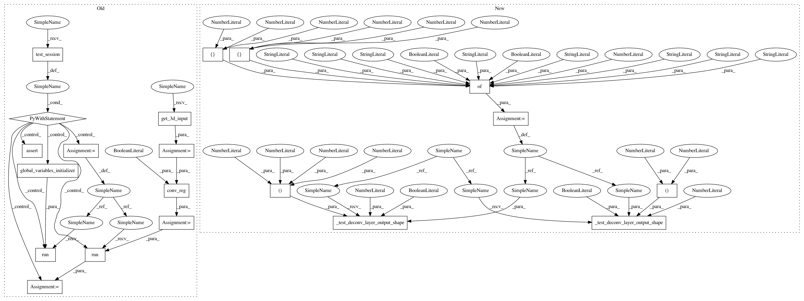

863a9dcee691e850e79d97a16abb977e24324fa1,tests/deconvolution_test.py,DeconvTest,test_deconvlayer_3d_bn_reg_dropout_valid_shape,#DeconvTest#,144
Before Change
self.assertAllClose((2, 32, 32, 32, 10), out_3d.shape)
def test_deconvlayer_3d_bn_reg_dropout_valid_shape(self):
x_3d = self.get_3d_input()
conv_reg = DeconvolutionalLayer(
10, 3, 2,
padding="VALID",
w_regularizer=regularizers.l2_regularizer(0.5),
with_bias=False,
with_bn=True,
acti_func="prelu")
conv_reg_out = conv_reg(x_3d, is_training=True, keep_prob=0.4)
print(conv_reg)
with self.test_session() as sess:
sess.run(tf.global_variables_initializer())
out_3d = sess.run(conv_reg_out)
self.assertAllClose((2, 33, 33, 33, 10), out_3d.shape)
////// 2d tests
def test_2d_deconv_default_shape(self):
x_2d = self.get_2d_input()
conv_2d = DeconvLayer(10, 3, 1)
conv_2d_out = conv_2d(x_2d)
After Change
output_shape=(2, 16, 32, 32, 10),
is_training=False)
def test_deconvlayer_3d_bn_reg_dropout_valid_shape(self):
input_param = {"n_output_chns": 10,
"kernel_size": [3, 5, 2],
"stride": [1, 2, 1],
"with_bias": False,
"with_bn": True,
"acti_func": "prelu",
"w_regularizer": regularizers.l2_regularizer(0.5)}
self._test_deconv_layer_output_shape(rank=3,
param_dict=input_param,
output_shape=(2, 16, 32, 16, 10),
is_training=True,
dropout_prob=0.4)
self._test_deconv_layer_output_shape(rank=3,
param_dict=input_param,
output_shape=(2, 16, 32, 16, 10),
is_training=False,
dropout_prob=1.0)
////// 2d tests
def test_2d_deconv_default_shape(self):
input_param = {"n_output_chns": 10,
In pattern: SUPERPATTERN
Frequency: 3
Non-data size: 20
Instances
Project Name: NifTK/NiftyNet
Commit Name: 863a9dcee691e850e79d97a16abb977e24324fa1
Time: 2017-07-17
Author: wenqi.li@ucl.ac.uk
File Name: tests/deconvolution_test.py
Class Name: DeconvTest
Method Name: test_deconvlayer_3d_bn_reg_dropout_valid_shape
Project Name: NifTK/NiftyNet
Commit Name: 863a9dcee691e850e79d97a16abb977e24324fa1
Time: 2017-07-17
Author: wenqi.li@ucl.ac.uk
File Name: tests/deconvolution_test.py
Class Name: DeconvTest
Method Name: test_deconvlayer_3d_bn_reg_dropout_valid_shape
Project Name: NifTK/NiftyNet
Commit Name: 863a9dcee691e850e79d97a16abb977e24324fa1
Time: 2017-07-17
Author: wenqi.li@ucl.ac.uk
File Name: tests/deconvolution_test.py
Class Name: DeconvTest
Method Name: test_deconvlayer_3d_bn_reg_prelu_shape
Project Name: NifTK/NiftyNet
Commit Name: 863a9dcee691e850e79d97a16abb977e24324fa1
Time: 2017-07-17
Author: wenqi.li@ucl.ac.uk
File Name: tests/deconvolution_test.py
Class Name: DeconvTest
Method Name: test_deconvlayer_3d_bn_reg_dropout_shape